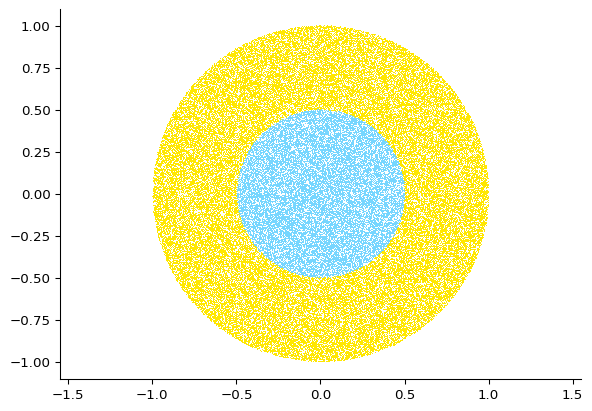

import numpy as npConsolidation - numpy riddles
Solve the following numpy riddles using numpy and its documentation.
If possible, work in the pair programming paradigm: work in pairs, with one person taking the role of the driver (writing the code) and one taking the role of the navigator (reading and understanding the documentation). Alternate the roles. Try to find solutions that are short (i.e. few line sof code) but easy to understand.
Diagonal Sum: - Riddle: Write a function that takes a square 2D NumPy array as input and returns the sum of the elements along the main diagonal. - Example: diagonal_sum([[1, 2, 3], [4, 5, 6], [7, 8, 9]]) -> 15
## YOUR CODE HERE
def diagonal_sum(seq):
arr = np.asarray(seq)
return np.diagonal(arr).sum()
diagonal_sum([[1, 2, 3], [4, 5, 6], [7, 8, 9]])15Unique Elements Count: - Riddle: Write a function that takes a 1D NumPy array as input and returns the count of unique elements in the array. - Example: unique_count([1, 2, 3, 2, 4, 1, 5]) -> 5
## YOUR CODE HERE
def unique_count(sequence):
return np.unique(sequence).size
unique_count([1, 2, 3, 2, 4, 1, 5]) 5Random sample ands cumulative sum: - Riddle: A fair coin is tossed 20 times, and we win 1£ for every head and lose 1£ for every tail. Assuming that we start with no money at the beginning, and that the seed of teh default random number generator is seed=1234, how much money do we have at every succesive step?
## YOUR CODE HERE
n_trials = 20
rng = np.random.default_rng(1234)
print("The amount we have after every coin tossing is", rng.choice([-1,1],n_trials).cumsum())The amount we have after every coin tossing is [ 1 2 3 2 1 2 1 0 -1 -2 -1 -2 -1 -2 -1 -2 -1 0 1 0]Rolling Window: - Riddle: Write a function that takes a 1D NumPy array and a window size as input, and returns a 2D array where each row is a sliding window of the input array of a given size. - For example, a 1d array with a rolling window of size 3: rolling_window([1, 2, 3, 4, 5], 3) -> [[1, 2, 3], [2, 3, 4], [3, 4, 5]]
Hint: you can use list comprehension and convert the final list to an array.
## YOUR CODE HERE
def rolling_window(seq,window):
arr = np.asarray(seq)
num_rows = len(seq)- window + 1
return np.array([arr[i:i+window] for i in range(num_rows)])
rolling_window([1, 2, 3, 4, 5], 3)array([[1, 2, 3],
[2, 3, 4],
[3, 4, 5]])Product of elements: - Riddle: The geometric mean of a number of observations \(x_1, x_2,\dots, x_n\) is defined as \(M = \sqrt{x_1\times x_2\times \dots x_n }\). Define a custom function to calculate the geometric mean. - Example: geometric_mean([1, 2, 3, 4, 5]) -> 10.954451150103322
## YOUR CODE HERE
def geometric_mean(seq):
return np.sqrt(np.prod(seq))
geometric_mean([1, 2, 3, 4, 5])10.954451150103322Vectorised calculations and visualisation: - Riddle: Draw 100 thousand points uniformly distributed inside a circle of radius 1 centered at (0,0). Plot them using scatplotter() from matplotlibacoording to their radial coordinate: - use the hexadecimal colour "#76d6ff" for points at a distance below 0.5 from the origin$. - use the hexadecimal colour "ffe701" for points furtehr away.
Hint1: disk point picking is not trivial: https://mathworld.wolfram.com/DiskPointPicking.html
Hint2: For matplotlib’s plot, use the pixel style ',', and remmber to set the axis to be in the same units ("equal")
## YOUR CODE HERE
npoints = 100_000
theta = np.random.uniform(0, 2*np.pi, npoints)
r = np.sqrt(np.random.uniform(0, 1, npoints))
x = r * np.cos(theta)
y = r * np.sin(theta)
inside = r<0.5
import matplotlib.pyplot as plt
plt.plot(x[inside],y[inside],',',color="#76d6ff")
plt.plot(x[~inside],y[~inside],',',color="#ffe701")
plt.axis("equal")(-1.0996463517906905,
1.0992516399542742,
-1.0994327729527829,
1.098998268565109)